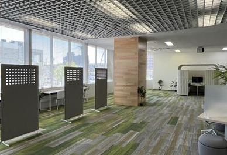
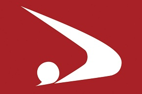
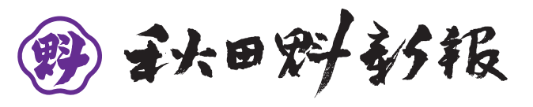
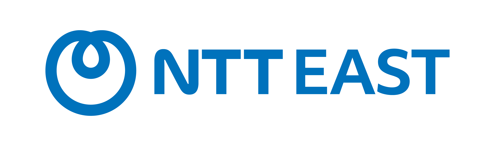

どんな一歩も、
未来への挑戦だ
"What"からでも"How"からでも
自分だけの"足音"を鳴らせ
お知らせ
第4期のエントリー受付を開始しました。1次募集の締切は6月29日（月）12:00まで！
秋田イノベーション・プログラム ASHIOTO -足音-は、2023年より国立大学法人 秋田大学 およびNTT東日本グループの共同主催で実施している、秋田県内の優れたアイデア・IT技術をもつ若手人材の発掘と支援を行うイノベーションプログラムです。IT技術を活用し社会に役立つプロダクトを開発したい方や、起業を目指したい方など、スタートアップ意欲を持つ若手人材を支援し、これまで3年間で計27組、43名の若手人材が修了しています。
今年度に関しては、秋田県から地理的にも近く、これまでアンケートでもご要望の多かった山形県庄内エリア在住の方にもご参加いただけるよう、エリア拡大を実施します。※秋田での対面参加が可能な方に限ります。
プログラム
秋田県および山形庄内エリア在住の若手人材（～39歳以下）を対象に、自らのアイデアを具現化（例：ソフトウェアの設計・開発等）できるよう人材育成を行い、イノベーションを創出しうるIT人材・起業家等の発掘・支援を行います。採択されたプロジェクトは「関心起点（What）」「技術起点（How）」に分類し、それぞれに精通したPM（プロジェクトマネージャー）が5か月間伴走支援します。
本プログラム参加の5つのメリット
「やってみたい」で終わらせず、ユーザー検証・プロトタイプ開発・成果発表までを一貫して経験。プログラム修了時には実動するプロダクト、ピッチ経験、最終発表会での登壇実績が手元に残ります。
ITを活用した事業開発の知見を持つメンターを多数配置し、アイデアが自身のビジネスや人脈に届く仲間になる機会を提供します。
プログラム期間中の開発に要する人件費の計上＋国内旅費＋プログラム事務局の定める生成AIサービス利用料の三科目（すべて実費精算）への充当を基本とし、上記以外の利用用途については事務局が審議の上利用可否について判断します。ただし、本プログラムの成果の知的財産権は参加者に帰属するので、安心して自身のアイデアを具体化いただくことができます。
初日には生成AIを用いたバイブコーディング（Vibe Coding）の講座を受講でき、プロダクト開発スピードと表現力を一段引き上げます。非エンジニアの方もアイデアを形にしやすい環境を提供します。既にバイブコーディングを活用している方にとっても、バイブコーディングに詳しいAIアドバイザーがあなたを期間中サポートします。
PMや同期、ASHIOTO修了生とディスカッションできる機会を提供します。また、デモデイ最終成果発表会はオープンイベントとして実施することで、様々な方へ自身のアイデアを広く周知する場を設けます。
コンテンツ
2024年に修了された2名の大学生の方にASHIOTOでの経験についてお話しいただきました。
実施期間
2026.8.15(土) → 2027.1.23(土)
エントリー締切
1次採択: 2026年6月29日（月）12:00 まで
2次採択: 2026年7月19日（日）23:59 まで
※合計10プロジェクト採択予定。1次で定員に達した場合、2次募集は実施しません。
募集対象
※以下の実施場所での基本現地参加が条件となります。
実施場所
コワーキングスペース Connect Labo OMOCE（おもしぇ） 他
〒010-0001 秋田県秋田市中通4丁目4−4 NTT中通ビル1F
※イベント出展やデモデイ最終成果発表会は近隣の会場での実施を予定しています。

スケジュール
6月29日（月）12:00 まで
公式ホームページ（本ページ）より申し込みを実施
締切後に、書類選考＋面談（1回）を予定
申し込みいただいた方へメールにて通知
7月19日（日）23:59 まで
※1次で定員（合計10プロジェクト）に達した場合は実施しません
可能な限り1次でご応募いただくよう推奨します
申し込みいただいた方へメールにて通知
PM・メンターとの顔合わせを行い、プログラムの目標設定を行う
新規事業開発について現場を深め、自分ごとにする
アウトプットによる自身のアイデアの現在地点の把握を行い、
具体化・概念実証企画を行う
秋田 起業家・スタートアップ交流ラボ2026（仮称）への出展により
県内での人脈形成、顧客の声を収集しプロダクトのブラッシュアップを行う
約3か月間の成果をアウトプットし、
最終成果に向けて計画策定のイメージをつかむ
デモを交えて5か月間の成果をアウトプットし、プログラム修了
統括プロジェクトマネージャー（統括PM）
プロジェクトを横断して講演・審査・アドバイス等のサポートを行います。
プロジェクトマネージャー
各プロジェクトごとにアイデアや適性に応じて担当し、各々が持つ豊富な経験からあなたのプロジェクトに関する助言・指導を行いサポートを行います。
ASHIOTOコンソーシアム
コンソーシアムメンバーの専門領域を活用したビジネスプランが生まれた場合には、以下の協力事業者が秋田で事業を行う者目線の有効なアドバイス等のサポートを行います。

秋田県 秋田県産業技術センター

お問い合わせ先
お問い合わせをいただく方の情報および、お問い合わせ内容を下記に入力の上、「送信する」をクリックしてください。
追って、担当者よりご連絡差し上げます。